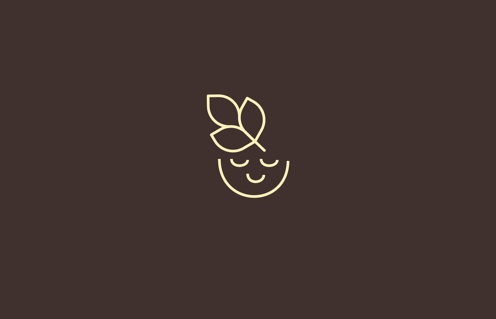
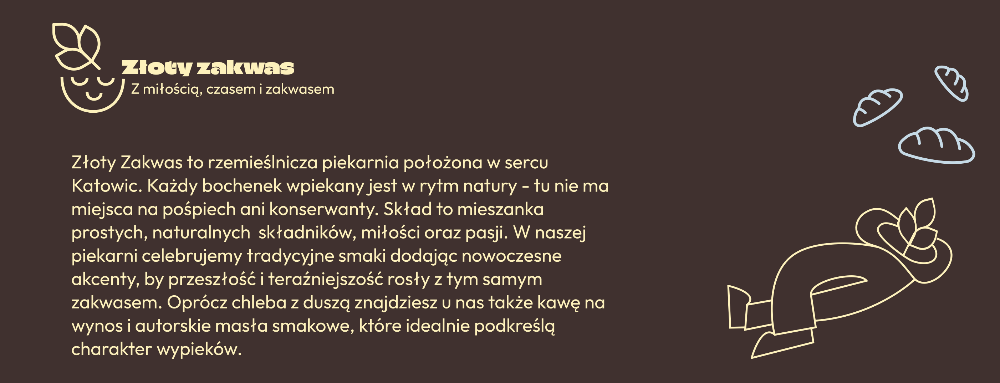
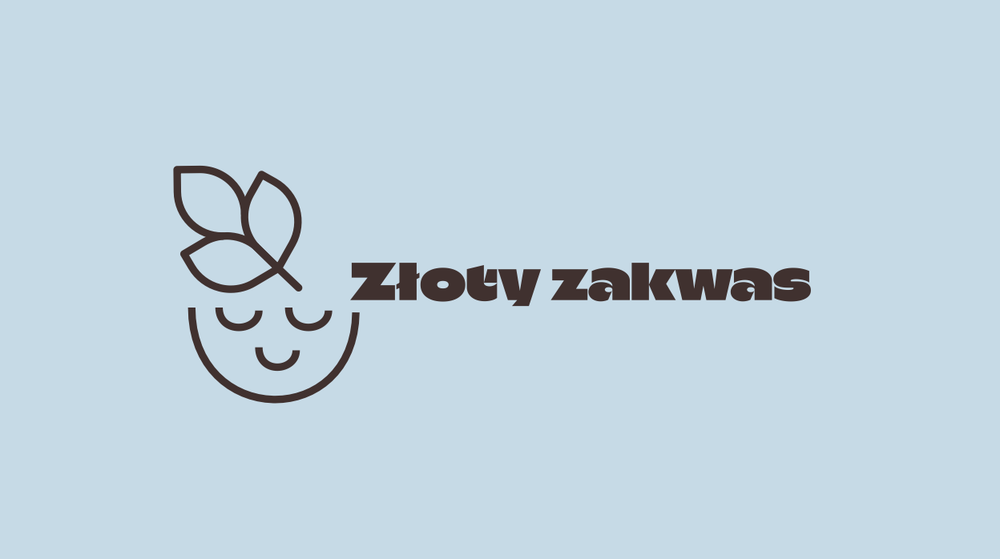
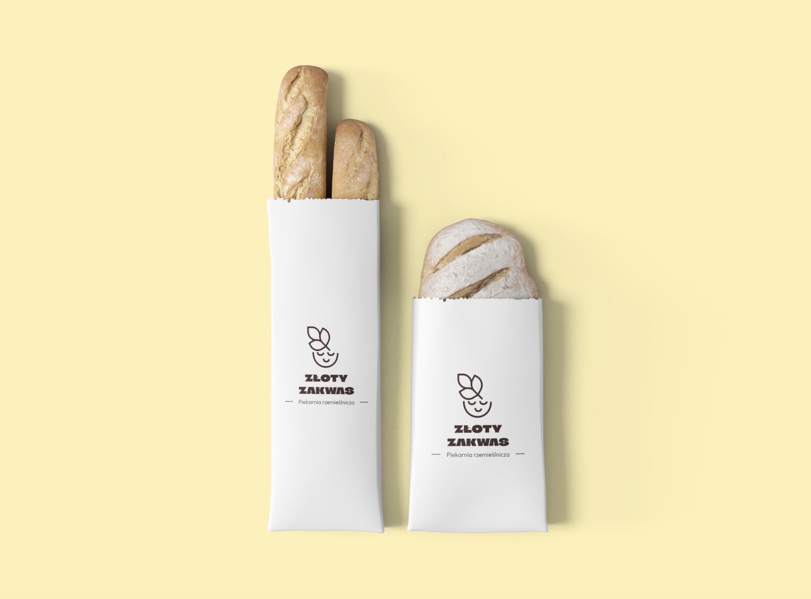
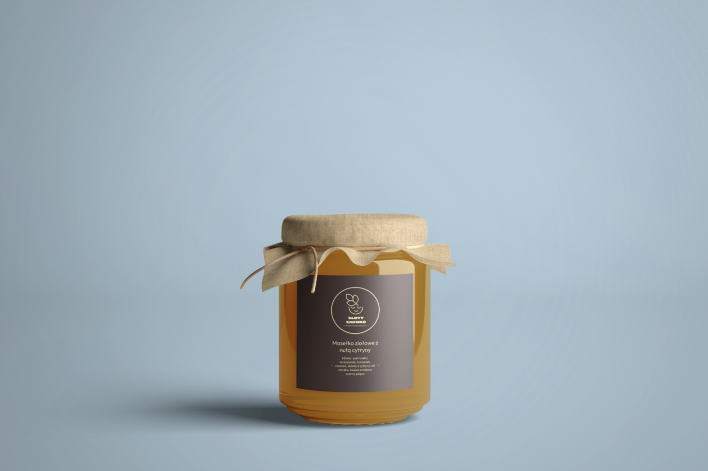
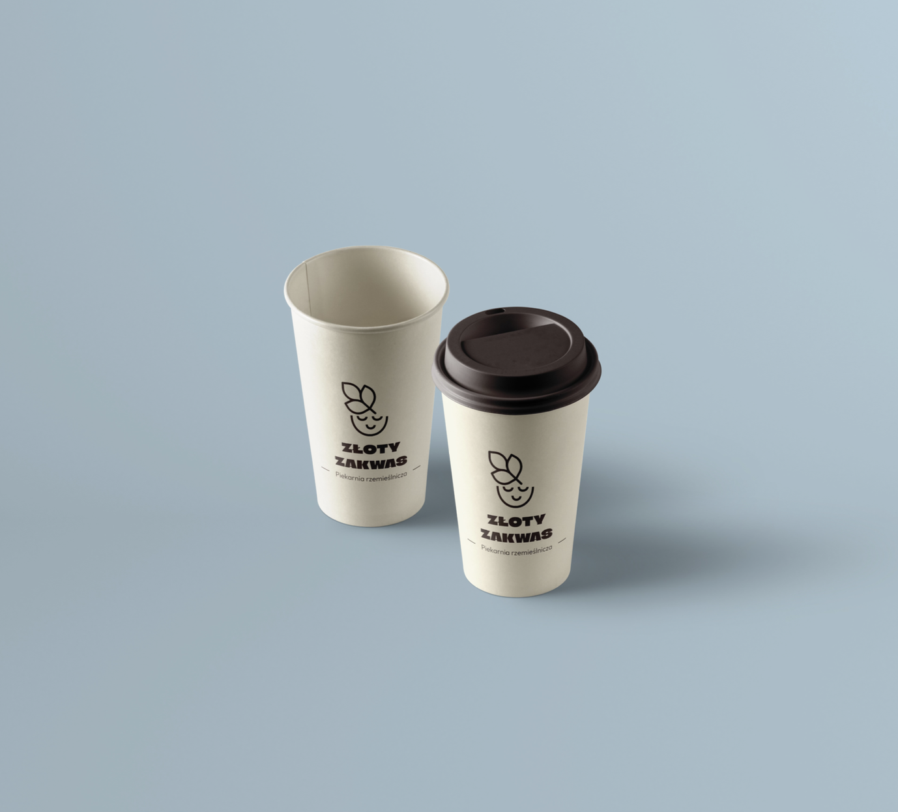
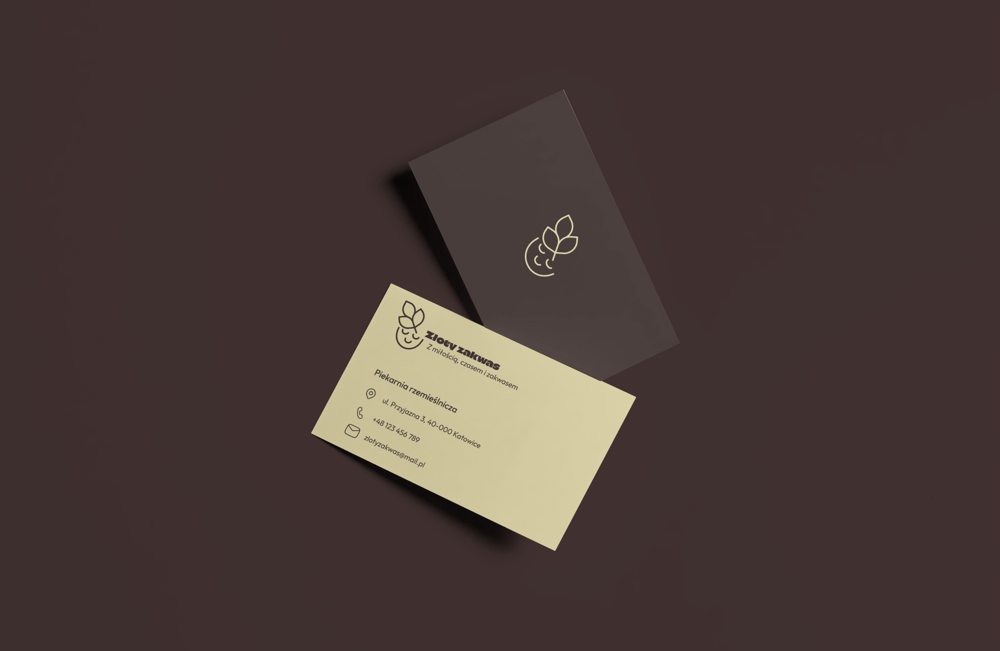
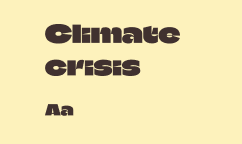
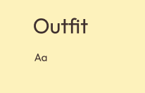

— piekarnia rzemieślnicza w sercu Katowic
Projekt kompleksowej identyfikacji wizualnej dla piekarni rzemieślniczej „Złoty Zakwas". Opracowano logo, paletę kolorystyczną, typografię oraz materiały promocyjne podkreślające lokalny charakter marki, jakość wypieków i naturalne składniki.
Celem projektu było stworzenie spójnego i rozpoznawalnego wizerunku budującego zaufanie klientów. Jako grupę odbiorców obrano mieszkańców Katowic w wieku 25-45 lat, którzy cenią sobie jakość, estetykę i styl "slow"






Paleta kolorów
Typografia


Projekt nauczył mnie jak ważna jest spójność we wszystkich punktach styku marki z klientem — od logo po opakowanie. Każdy element musi opowiadać tę samą historię.
Odkryłam też, że branding dla małej lokalnej marki wymaga szczególnej wrażliwości — musi być autentyczny i bliski wartościom, które reprezentuje.